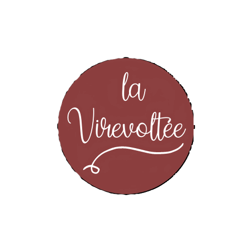
Le même contenu, les mêmes photos (les vôtres, aucune image générée en ouverture) et le rouge brique de votre logo, trois façons de les mettre en scène.
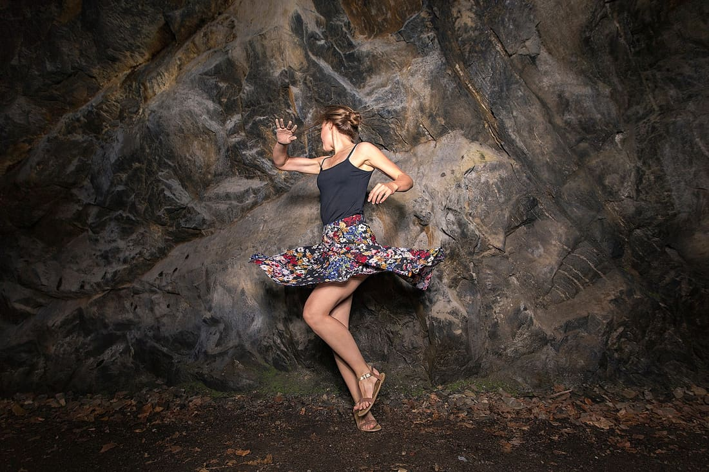
Compagnie de danse contemporaine · Limoges
Une danse organique et explosive
Danse, musique, images : cinq créations pour la rue et pour la scène.
Virevolte
Ambiance : lumineuse et énergique, comme un studio en plein jour ; le tourbillon de votre nom.
Typographies : Syne ExtraBold en capitales pour les titres, Manrope pour le texte.
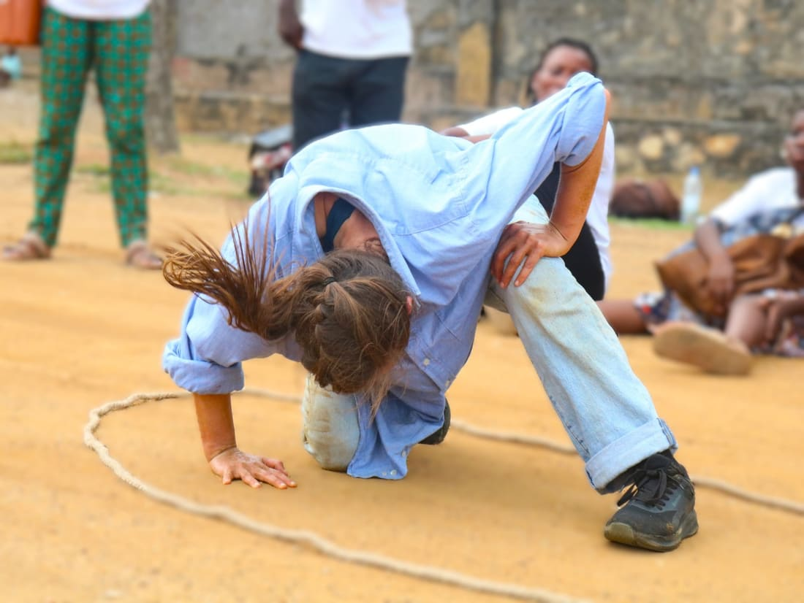
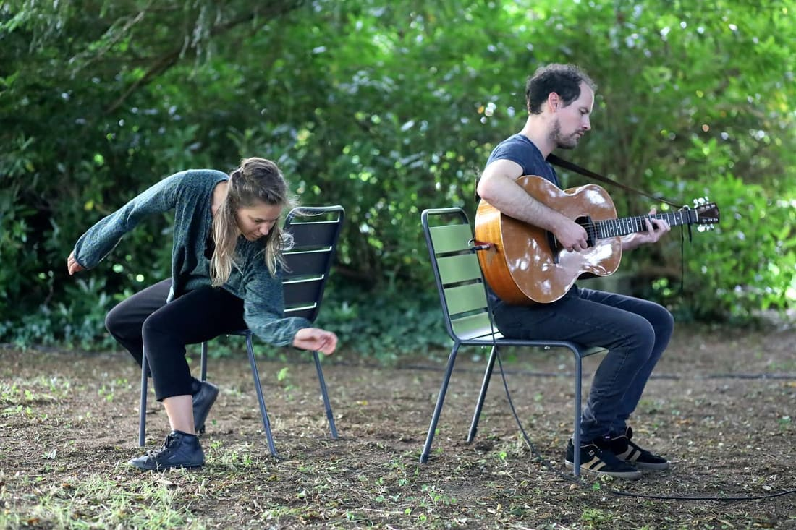
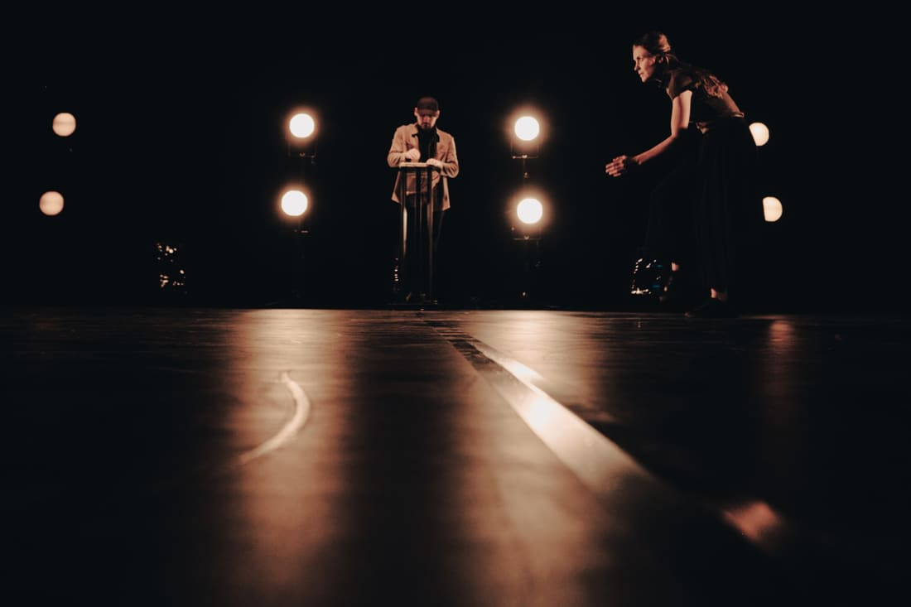
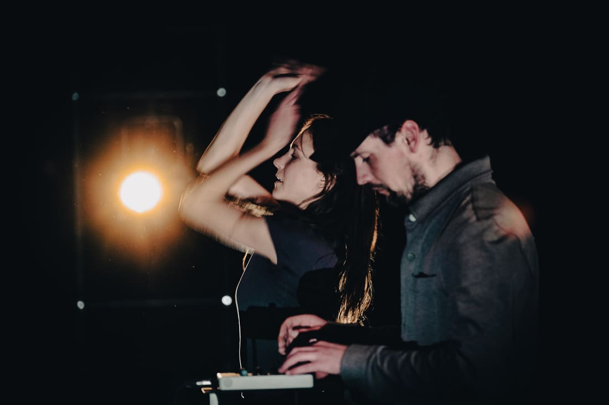
Danse et musique en direct
Entre crépuscules et aubes
La Virevoltée invite musiciens, vidéastes et éclairagistes à danser avec elle.
Le plateau
Ambiance : la salle juste avant le noir, une poursuite s'allume ; poétique, musicale.
Typographies : Instrument Serif, un mot en italique, Inter pour le texte.
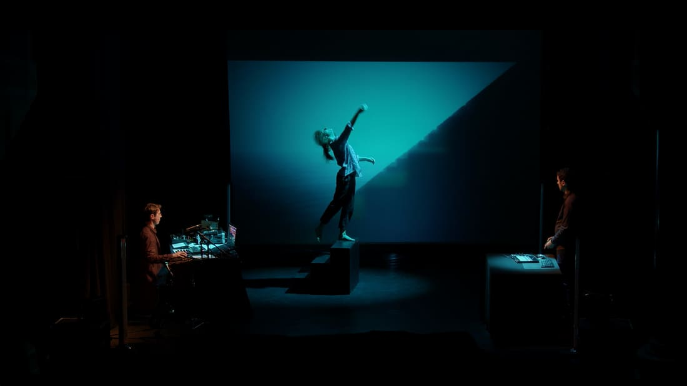
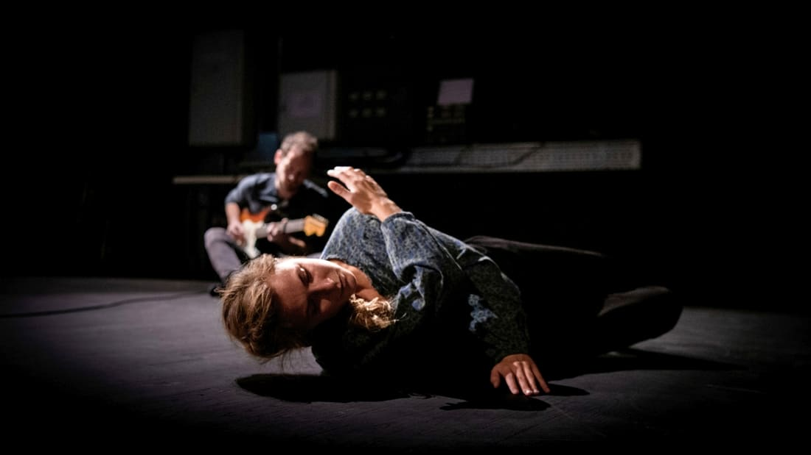
Le geste,
image par image
Chaque création se déroule comme une chronophotographie : ses photos s'enchaînent au défilement.
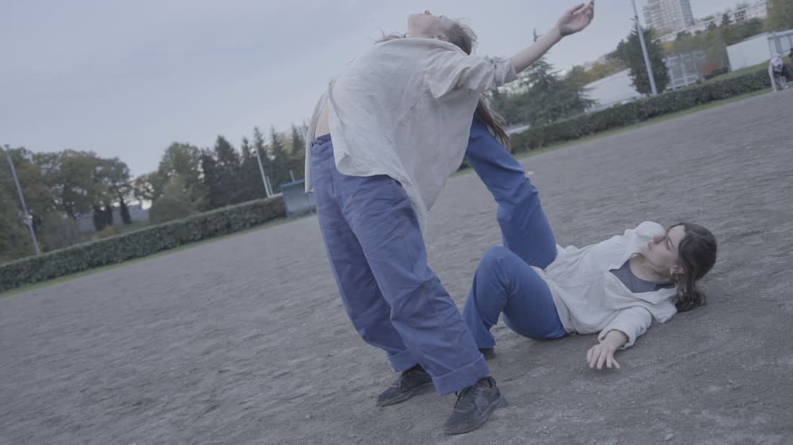
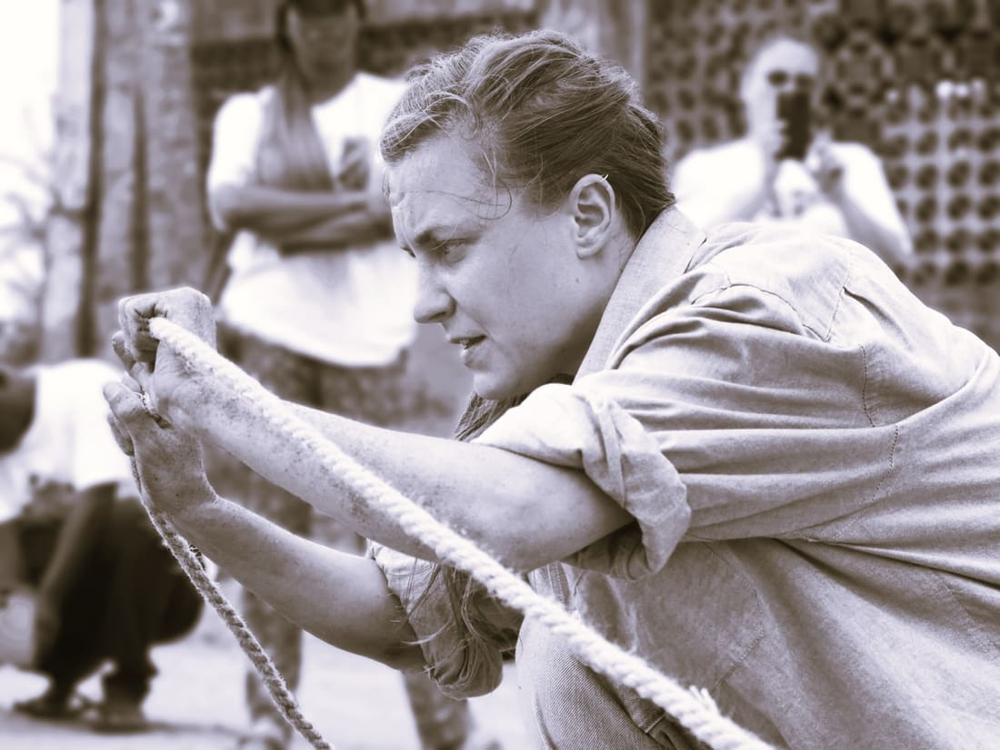
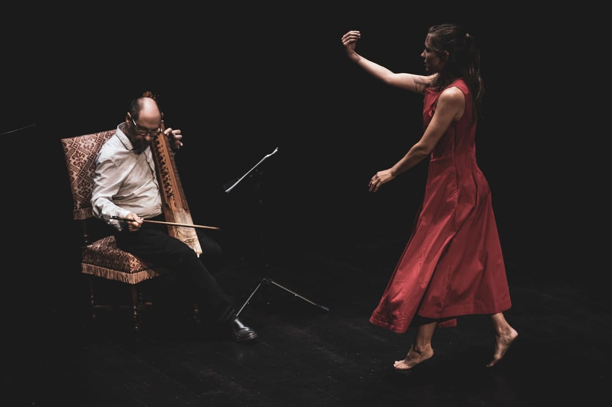
Geste décomposé
Ambiance : revue d'art contemporain, claire et graphique ; le mouvement montré image par image.
Typographies : Bricolage Grotesque pour les titres, Instrument Sans pour le texte.
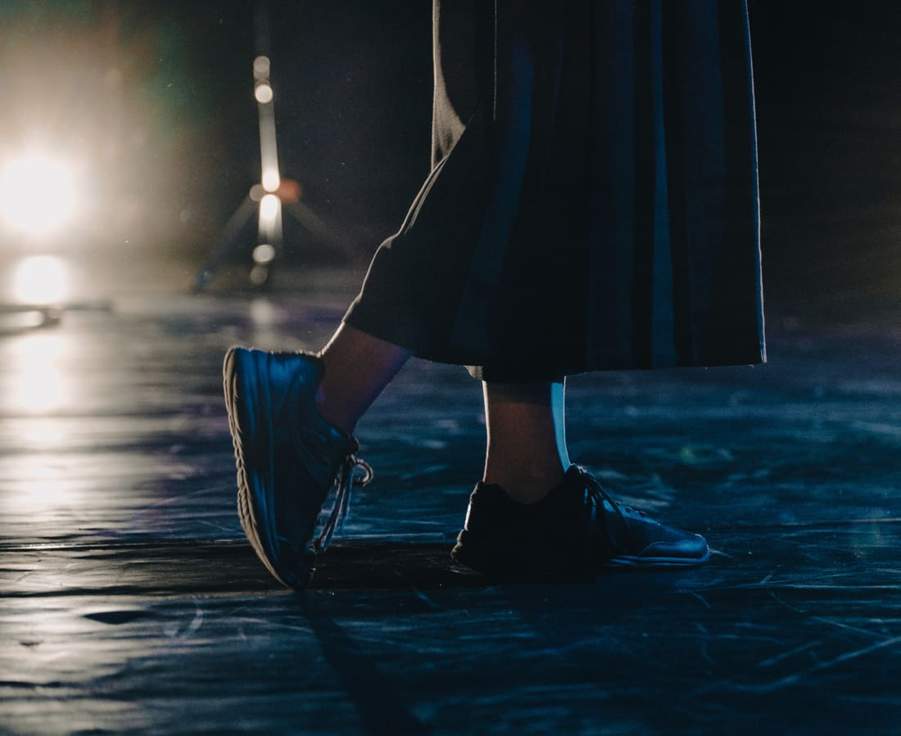